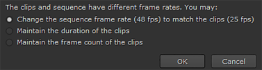
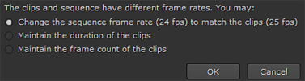
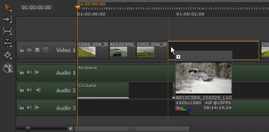
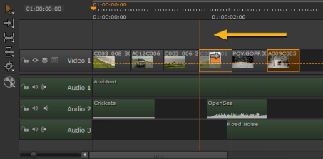

The timeline allows you to add clips by simple drag-and-drop from either the Viewer or bins. Using the Viewer restricts you to a single clip, the current clip, but you can drag as many clips as you like from bins.
TIP: You can create a new sequence by dragging a clip to an empty timeline pane.
New timelines pick up their frame rate from the Project > Edit Settings > Sequence sub-menu by default. Dropping a clip with a different frame rate on a new timeline displays a warning:

However, if the timeline is already populated and the clip you’re adding doesn’t have the same frame rate as the timeline, you’re prompted to choose whether the clip’s duration or frame count is retained.

Take care not to overwrite existing clip instances - the most recent clip overlays any existing clip instance. To avoid this, do one of the following:
• Move the playhead to the target area of the timeline in the record Viewer  , load the required clip in a source Viewer
, load the required clip in a source Viewer  , and then use Insert (N) or Overwrite (M) to place the clip into the timeline at the playhead position on the lowest, unlocked track available.
, and then use Insert (N) or Overwrite (M) to place the clip into the timeline at the playhead position on the lowest, unlocked track available.
NOTE: You can only Insert or Overwrite using clips from the current project.
See Insert, Overwrite, and 3-Point Editing for more information on source/record editing.
• Use the Multi or Move/Trim tools to make space for the new clip and then drag-and-drop it in to the space (see Using the Move/Trim Tool for more information).

• Drag-and-drop the new clip at the end of the sequence, then using the Multi or Move/Trim tools, drag the new clip to an existing transition, hold down the Alt modifier, and drop the clip to Ripple all other clip instances down the timeline.

TIP: Enabling Preferences > Panels > Timeline > show frame end marker draws an extra line on the timeline to the right of the playhead, indicating the end of the current frame.
|
|